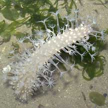
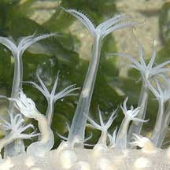
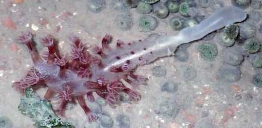
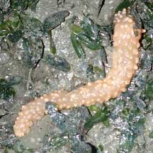
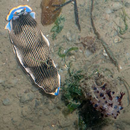
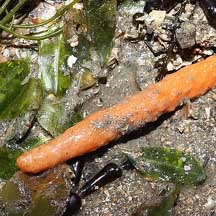
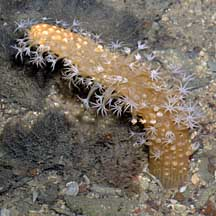
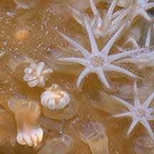
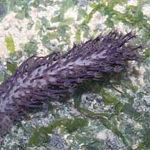
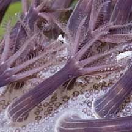

|
|
| sea pens text index | photo index |
| Phylum Cnidaria > Class Anthozoa > Subclass Alcyonaria/Octocorallia > Order Pennatulacea |
| Flowery
sea pen Family Veretillidae* updated Dec 2019 Where seen? This beautiful colony of flowery polyps is often seen on our Northern shores, mainly at night. On soft silty sand among seagrasses. Features: Colony 15-20cm long. Long, sausage-like 'stem', called the axial or primary polyp, that supports the whole colony. No leaf-like structures. Feeding polyps (autozooids) large (1-2cm) with eight branched tentacles emerge directly evenly from and all around the 'stem'. Tentacles usually white, but the body column may match the colour of the 'stem'. Colours seen include white, maroon, purple and orange. The colony also has another kind of polyp that sucks in water (siphonozooids) and which are minute, numerous and crowded. |
 Changi, May 05 |
 |
 Autzooids with long columns and eight branched tentacles. |
| The bottom half of the primary polyp
forms a muscular 'foot' (called the peduncle) that anchors the colony
and retracts the whole colony into the ground at low tide. This portion
lacks other kinds of polyps. The central stalk is usually stiffened
by an internal 'bone' made of calcium. When exposed at low tide, the autozooids can retract completely and the fat central stalk flops over so that it looks like a limp sausage on the sand. Sometimes confused with other sausage-shaped animals. Here's more on how to tell apart sausage-shaped animals. |
 'Uprooted' flowery sea pen showing 'foot' that is usually buried, and stiff internal 'bone'. Beting Bronok, Jun 21 |
 May look like a 'sausage'. Pasir Ris Park, Oct 20 |
| Pen pals: Sometimes, tiny transparent shrimp may be seen among the tentacles of the sea pen. The shrimps are often found in pairs and often all you can see of them are their eyeballs! |
 A nudibranch that eats sea pens is lurking near this one. Changi, Aug 14 |

*Species are difficult to positively identify without close examination.
On this website, they are grouped by external features for convenience of display
| Flowery sea pens on Singapore shores |
On wildsingapore
flickr
|
| Other sightings on Singapore shores |
 An uprooted sea pen with flowery secondary polyps retracted. Pulau Ubin, Dec 09 Photo shared by James Koh on his blog. |
 Beting Bronok, May 09  |
 Changi, Jun 05  |
 Pulau Sekudu, May 10  |
|
Links
References
|